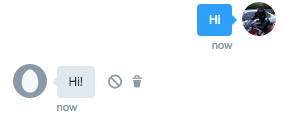

Create A Twitter Chat-Bot with PHP .. in 5 minutes
We want to set up a simple Twitter chatbot that just replies with whatever we say to it. The bot has to react in an instant so we will be using the Twitter Streaming API to stay permanently connected to Twitter. Since we do not have the time to fiddle with the connection details, we'll be using the very nice Phirehose PHP library for this task. For replying we are simply using Twitters REST API.
1. You need a Twitter Account with a confirmed phone number for your bot. Create a regular Twitter Account here real quick.
2. Login and go to apps.twitter.com, click the "Create New App" Button. Choose any Name, Description and Website URL - nobody will ever see this. Leave the Callback URL empty.
3. Get all the tokens needed for authentication: Click on the app created, then "Keys and Access Tokens", copy Consumer Key (API Key) (A) and Consumer Secret (API Secret) (B), change access level to include Direct Messages, scroll down to "Access Token" and create a new token there. Copy Access Token (C) and Access Token Secret (D).
4. Download/Clone Phirehose. We only need the three PHP files in the lib dir. Create a new php file that will be our bot entry "executable". Replace the four Tokens/Secrets collected above (A/B/C/D).
<?php
require_once('UserstreamPhirehose.php');
class TwitterChatBot extends UserstreamPhirehose {
public function enqueueStatus($status) {
$data = json_decode($status, true);
echo date("Y-m-d H:i:s (").strlen($status)."):".print_r($data,true)."\n";
}
}
define('TWITTER_CONSUMER_KEY', 'A');
define('TWITTER_CONSUMER_SECRET', 'B');
define('OAUTH_TOKEN', 'C');
define('OAUTH_SECRET', 'D');
// Start streaming
$sc = new TwitterChatBot(OAUTH_TOKEN, OAUTH_SECRET);
$sc->consume();
5. Run this on the CLI. It should instantly print out the data whenever the bot receives a direct message. Send a message to the bot's Twitter account from another account. Do not forget to friend each other before or enable to receive direct messages from unknown people in the security settings of the bot's account.
6. We are using the oAuth procedure from Phirehose to craft our REST API call for the reply. Replace the TwitterChatBot class above with the following:
class TwitterChatBot extends UserstreamPhirehose {
public function enqueueStatus($status) {
$data = json_decode($status, true);
echo date("Y-m-d H:i:s (").strlen($status)."):".print_r($data,true)."\n";
if (isset($data['direct_message']) && $data['direct_message']['screen_name'] != '#BOT_SCREENNAME#') {
$msg = $data['direct_message']['text'];
$id = $data['direct_message']['sender_id'];
$this->msg($id, $msg . '!');
}
}
public function msg($to, $text) {
$url = 'https://api.twitter.com/1.1/direct_messages/new.json';
$req = ['user_id' => $to, 'text' => $text];
$auth = $this->getAuthorizationHeader($url, $req);
$context = stream_context_create(array(
'http' => array(
'method' => 'POST',
'header' => "Authorization: " . $auth,
'content' => http_build_query($req)
)
));
$data = file_get_contents($url, false, $context);
}
}
Important: Replace #BOT_SCREENNAME# in line 6 with the screen name of your bot. Messages sent from the bot will also come in via the streaming API so we have to exclude these to prevent an infinite loop.
7. We're done!
